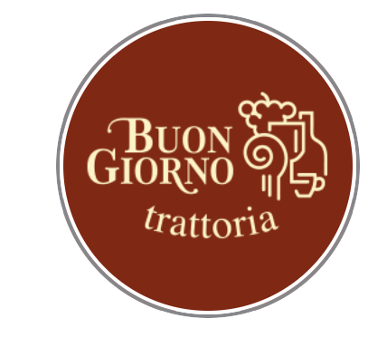

Itališki vakarai Kaune
Buon Giorno.O vakare - dar geriau.
Itališka virtuvė, vynas ir pokalbiai, kuriems norisi skirti laiko.
Buon Giorno TrattoriaItališki vakarai KauneItališka virtuvė, vynas ir pokalbiai, kuriems norisi skirti laiko.Kaunas
Buon Giorno Trattoria virtuvė
Trattorijos nuotaika miesto centre
Buon Giorno Trattoria kviečia pažinti itališko maisto ir vyno kultūrą. Užsukite vakarienei ar susitikimui, kuriame svarbiausia - bendravimas ir maistas.
Atraskite meniuBuon Giorno Trattoria iš arčiau
Skoniai, dėl kurių verta užsukti.
Laikas jūsų apsilankymui
Itališkas vakaras ir namuose
Patiekalus ir jų kainas rasite užsakymų puslapyje. Pasirinkite vakarienę pristatymui.
Peržiūrėti meniu